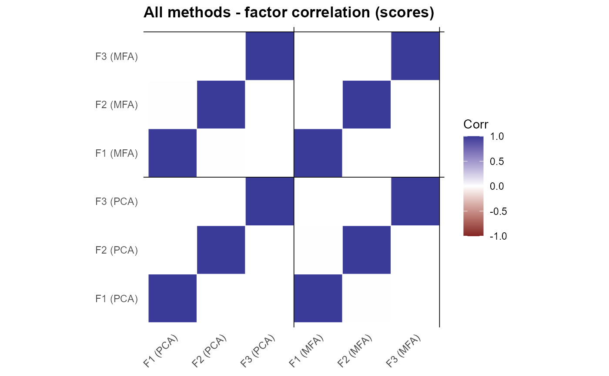

Compare and benchmark multiple factor analysis results
Source:R/benchmark.R
benchmark_factor_methods.RdGiven the output of run_factor_pipeline() (or the metadata-merged variant
from attach_scores_metadata()), this function:
collects scores and loadings for all available methods,
optionally z-scores the factors,
computes pairwise factor correlations (Hungarian matching),
builds correlation heatmaps and scatter plots for scores and per-omic loadings,
builds an all-vs-all score correlation heatmap,
(optionally) computes AUC against ground-truth feature/sample labels.
Usage
benchmark_factor_methods(
results,
methods = names(results),
rename_cols = TRUE,
center_scale = TRUE,
feature_id_split = "::",
ground_truth_feature = NULL,
ground_truth_sample = NULL,
plot_theme_base_size = 11
)Arguments
- results
Named list returned by
run_factor_pipeline()orattach_scores_metadata().- methods
Character vector of method names to compare. Defaults to every method in
results.- rename_cols
Logical. If
TRUE(default), factor columns are labelled"F1 (METHOD)".- center_scale
Logical. If
TRUE(default), z-score each factor column before comparison.- feature_id_split
Character. Separator used to split
"view::feature"row names when aligning loadings (default"::").- ground_truth_feature
Optional named numeric/integer 0/1 vector of feature labels for AUC calculation.
- ground_truth_sample
Optional named numeric/integer 0/1 vector of sample labels for AUC calculation.
- plot_theme_base_size
Numeric. Base font size for ggplot themes (default
11).
Value
A named list containing:
available_methodsCharacter vector of methods actually found.
scoresNamed list of scaled score matrices.
loadingsNamed list of scaled loading matrices.
pairwise_scoresPairwise summary stats and correlation matrices (scores).
pairwise_loadingsSame for loadings, per dataset.
pair_heatmaps_scoresNamed list of ggplot heatmaps (scores).
pair_heatmaps_loadingsNamed list of ggplot heatmaps (loadings).
pair_scatter_scoresScatter plots for matched score pairs.
pair_scatter_loadingsScatter plots for matched loading pairs.
all_scores_heatmapGlobal all-method score correlation heatmap.
summary_table_scoresCombined summary data frame (scores).
summary_table_loadingsCombined summary data frame (loadings).
auc_resultsAUC table (if ground truth provided).
pairs_scores_by_factorPairs plots per factor (scores).
pairs_loadings_by_dataset_and_factorPairs plots per dataset and factor (loadings).
Examples
sim <- simulate_multiomics(n_samples = 40, seed = 1)
res <- run_factor_pipeline(sim$data, methods = c("PCA", "MFA"), k = 3,
verbose = FALSE)
bench <- benchmark_factor_methods(res)
bench$summary_table_scores
#> pair k_m1_scores k_m2_scores k_matched_scores mean_abs_corr_scores
#> 1 PCA vs MFA 3 3 3 0.9999943
#> median_abs_corr_scores max_abs_corr_scores
#> 1 0.9999942 0.9999951
bench$all_scores_heatmap
